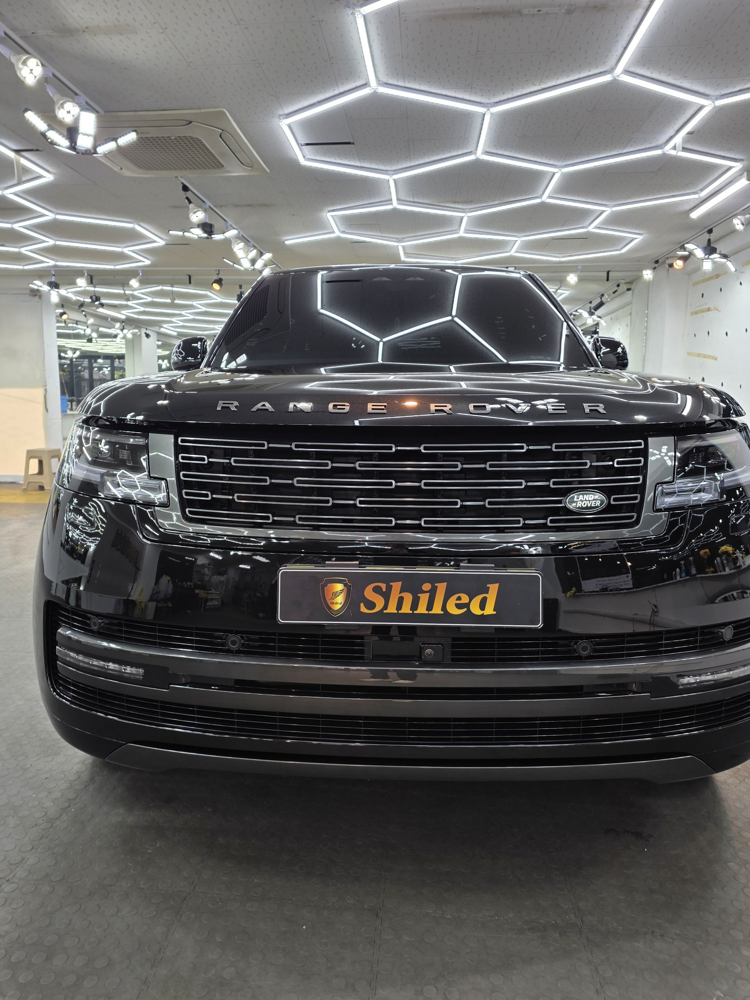
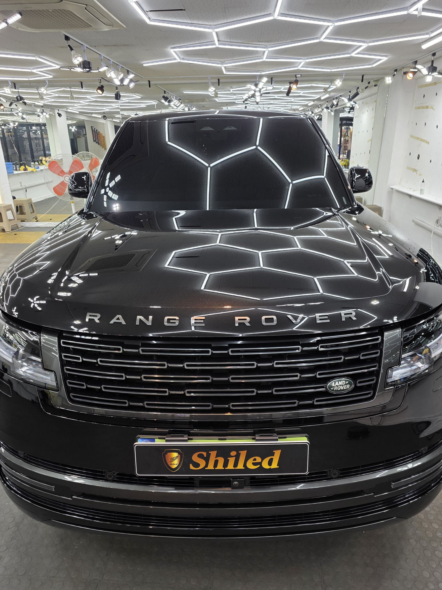
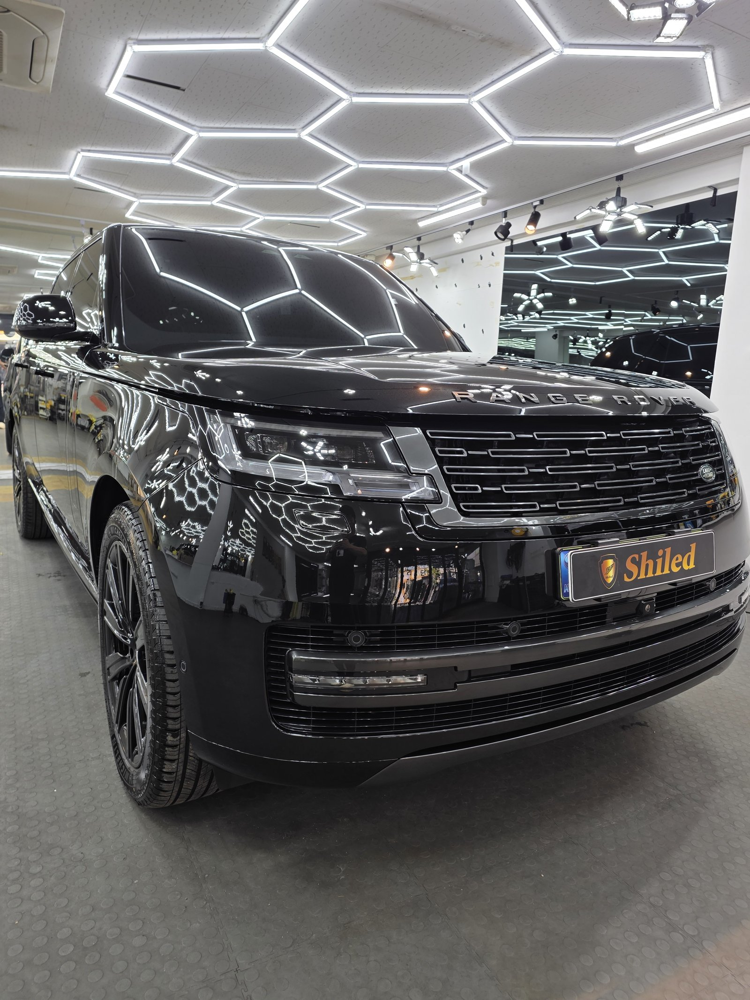
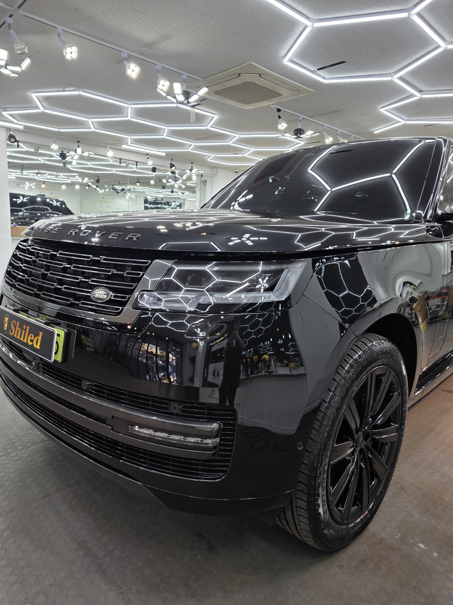
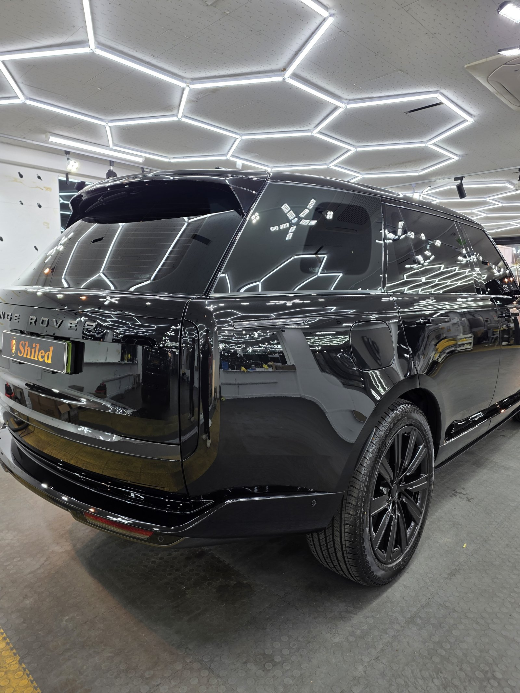
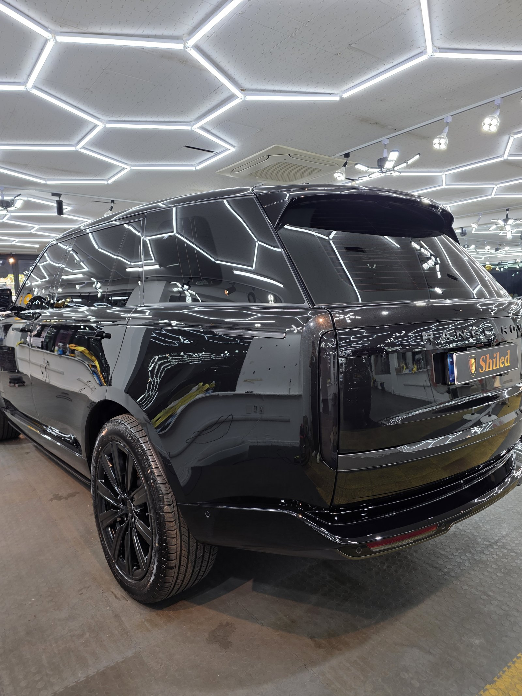
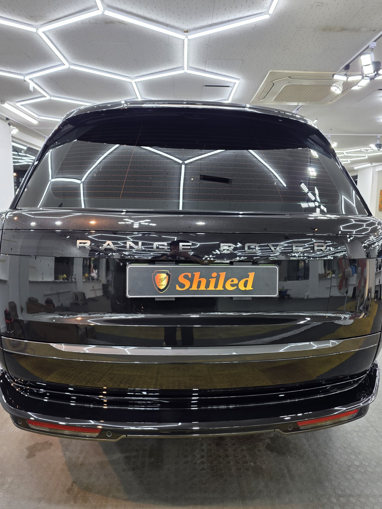
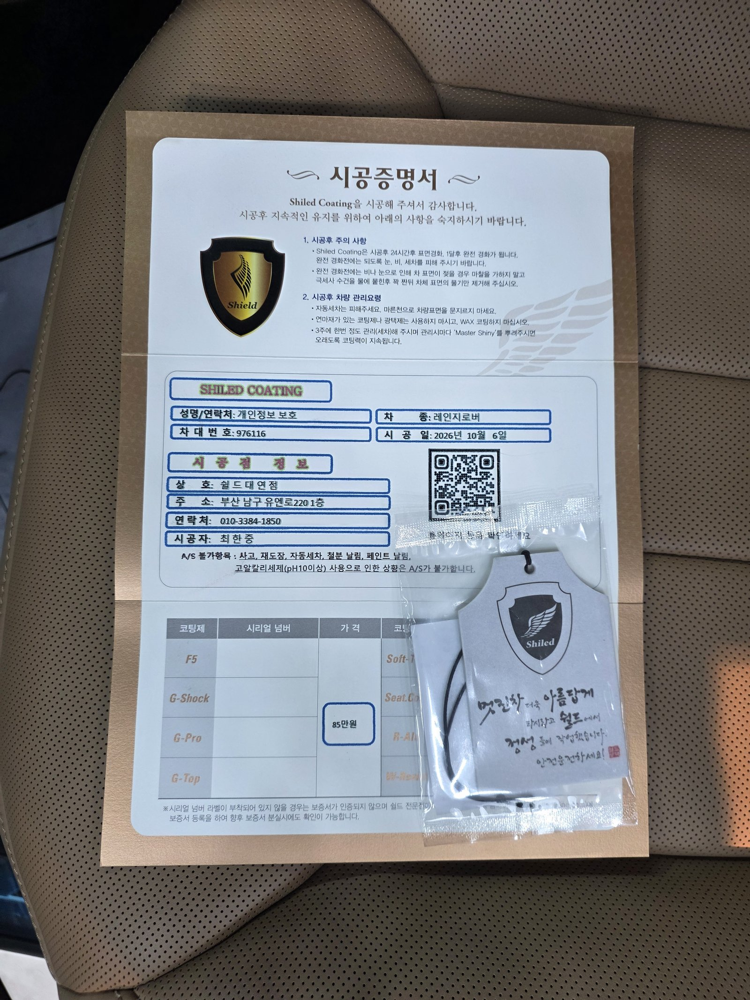

랜드로버 레인지로버, 검정 신차입니다.
레인지로버는 보닛이 평평하고 옆면이 곧게 서 있는 차입니다.
면이 넓고 반듯해서 도장 상태가 그대로 비쳐 보입니다.
부산 유리막코팅 작업의 레인지로버 기록입니다.

평평한 보닛은 어떻게 점검하나요?
천장 육각 조명을 보닛에 그대로 비춰 봅니다.
육각 선이 끊기거나 휘지 않고 곧게 이어지면 면이 고르다는 뜻입니다.
레인지로버처럼 보닛이 넓고 평평한 차는 육각 패턴이 그대로 거울처럼 맺혀서 확인이 쉽습니다.


검정 레인지로버에 F5를 올린 이유
F5는 색감의 깊이와 글로시함에 특화된 코팅입니다.
검정 대형 SUV는 면적이 넓은 만큼 광의 깊이가 차 전체 인상을 좌우합니다.
그래서 이 차는 색감 쪽을 우선해 F5로 진행했습니다.
코팅제는 대표가 직접 개발·제조한 제품입니다.


기술자의 팁
레인지로버는 루프가 높아 세차할 때 손이 잘 닿지 않습니다. 루프를 대충 넘기면 거기서 흘러내린 물이 옆면에 줄 자국을 만듭니다. 발판을 쓰더라도 루프부터 먼저 물기를 제거해 주십시오.


이번 사진 묶음에는 실내 컷이 없어 외부 위주로 기록했습니다.
시공증명서를 함께 드립니다
모든 시공 차량에 시공증명서를 드립니다.
차종·시공일·코팅제 시리얼 번호가 적혀 있고, 홈페이지에 등록해 보증을 받으실 수 있습니다. 이 차는 F5로 기록돼 있습니다.

차종·시공일·코팅제 시리얼이 기재된 시공증명서
자주 묻는 질문
Q. 검정 레인지로버에는 어떤 코팅이 맞나요?
A. 이 차는 F5로 진행했습니다. F5는 색감 깊이에 특화돼 넓은 검정 차체의 광을 깊게 살려줍니다.
Q. 대형 SUV 루프는 어떻게 관리하나요?
A. 루프부터 먼저 물기를 제거해야 합니다. 루프에 남은 물이 옆면으로 흘러내리면 줄 자국이 생깁니다.
Q. 왜 출고 전에 코팅하나요?
A. 도장면이 가장 깨끗할 때 올린 코팅이 가장 오래갑니다. 운행과 세차로 잔기스가 생기기 전에 입혀두는 것이 핵심입니다.
Q. 코팅 후 세차는 언제부터 하나요?
A. 코팅이 자리 잡을 시간이 필요하므로 시공 직후 강한 세차는 피하는 것이 좋습니다. 정확한 시점은 인도할 때 안내해 드립니다.
Q. 쉴드광택 위치와 예약은 어떻게 하나요?
A. 부산 남구 유엔로220 1F 쉴드광택입니다. 예약·상담은 010-3384-1850, 대표 최한중이 직접 상담하고 책임 시공합니다.
새 차일수록 시작점이 다릅니다. 가장 깨끗할 때 입혀두십시오.
제품을 직접 만드는 사람이 직접 시공합니다.
부산에서 신차 유리막코팅을 고민 중이시면 편하게 연락 주십시오.
어떤 차를 타냐보다 어떻게 타냐가 중요합니다~!
시공 중에는 전화를 받지 못할 때가 많습니다.
카카오톡으로 차종과 원하시는 시공을 남겨주시면 확인 후 답변드립니다.
쉴드광택 · 부산 남구 유엔로220 1F · 대표 최한중